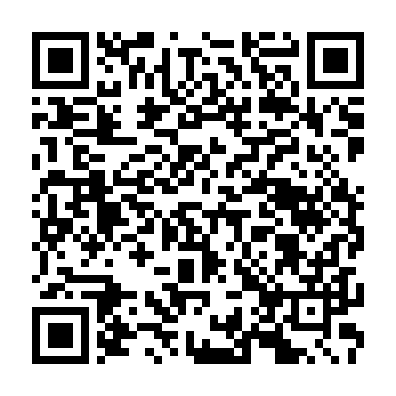

Currently it serves
1
apps. To add it to your F-Droid client, scan the QR code (click it to enlarge) or use this URL:
https://javoxir5543.github.io/nurvpn-repo/repo
If you would like to manually verify the fingerprint (SHA-256) of the repository signing key, here it is: